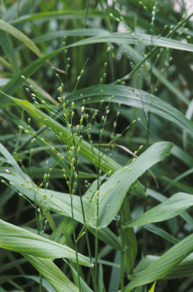
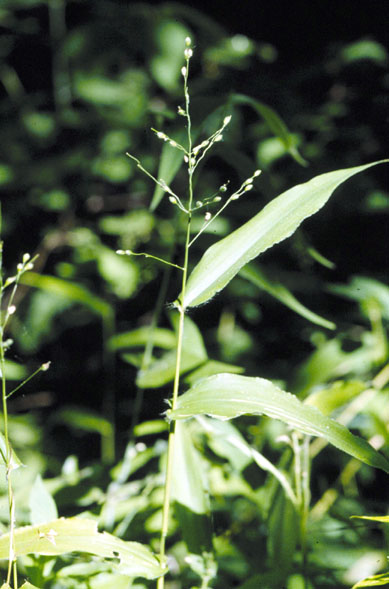
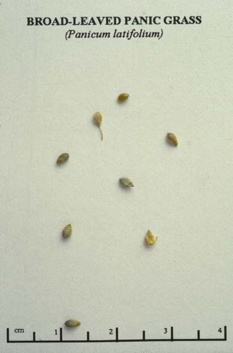

Panicum Latifolium
Family: Poaceae
Broad-Leaved Panic Grass
Swink/Wilhelm #5


Click to view larger photo
FLOWERING: May - July
SEED TIMING: Mid-June to Mid-July
HABITAT: Woods and mesic open savanna. Very shade tolerant, but will also grow in more open savannas.
DIAGNOSTIC FEATURES: Grows 1 to 2 feet tall. Dark green leaves are very wide (up to 1.5 inches) which may fool you into thinking it is not a grass. The entire panicle will look green even when seeds are ripe.
TO PICK: The seed ripens at different times and is therefore difficult to gather. Try running your fingers gently along the seed panicle to catch what falls off. You will have to return several times before it is all collected. Or pick 100 % of ripe seed on the first pass leaving the unripe seed for the site.